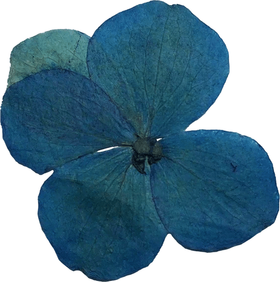
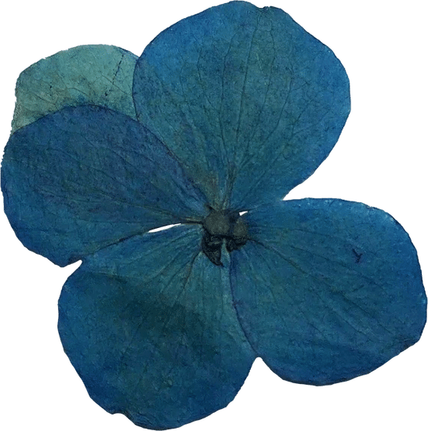

Latest Tech Work
Currently, I am studying Video Game Programming and Development at ENTI (Escola de Noves Tecnologies Interactives), where I am expanding my knowledge in game design and interactive storytelling.
Through my Final Degree Project (TFG) in collaboration with the Complutense University of Madrid (UCM), I explored the application of narrative design in Virtual Reality (VR) projects. The case study, Didascalia V.C., demonstrated how interactive storytelling can enhance educational experiences.
I acted as a narrative mentor for the development team, designing structures applicable to the final version of the game. This project highlighted how technology and narrative combine to create meaningful player-centered experiences.
Grade achieved: 9.5/10
If you’d like to read the full thesis, please contact me at luciapuga.game@gmail.com.